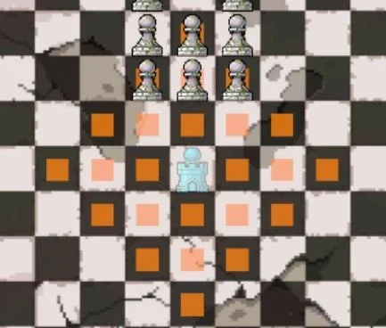
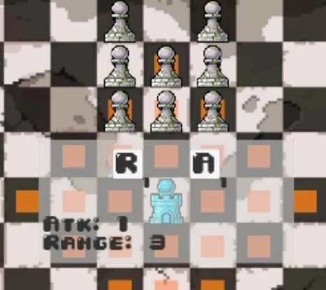

问题：生成点并不都可达
Bishop 与基地不在同色格时可能无法抵达；Pawn 在同列及相邻列没有可用目标、且游戏没有升变规则时，也会出现无有效路径的问题。
从棋子的移动约束出发，把炮塔布局、资源投入与敌人生成组织成棋盘塔防。

Chess Siege 将国际象棋移动规则与塔防结合。玩家建造、升级防御炮塔，对抗像棋子一样移动和攻击的敌人。不同于标准国际象棋，敌方棋子在每个战斗回合内协同行动。


随着进度解锁更强的炮塔，同时承担更高的建造资源需求。棋盘上的移动方式、攻击范围和资源投入共同影响防守布局。
以建造点数为参照的敌人生成模型：每关开始前给予玩家 2 点建造资源，敌人的总 Cost 预算为本局累计获得建造点数的 2 倍。在剩余预算足够时，按权重生成敌方棋子。
敌方 Cost 总预算 = 本局累计建造点数 × 2
Cost 约束生成成本；权重决定抽取倾向。
| 阶段 | 棋子 | Cost | 权重 | 生命值 |
|---|---|---|---|---|
| 1 | Pawn | 1 | 6000 | 1 |
| 1 | Rook | 5 | 1200 | 1 |
| 1 | Knight | 2 | 2000 | 1 |
| 1 | Bishop | 5 | 800 | 1 |
| 4 | Pawn | 1 | 4000 | 4 |
| 4 | Rook | 4 | 1300 | 2 |
| 4 | Knight | 1 | 2500 | 2 |
| 4 | Bishop | 4 | 1300 | 1 |
阶段变化同时调整 Cost、权重与生命值。例如 Knight 在阶段 4 的 Cost 降低、生命值提高；Pawn 则逐步提高生命值。生成压力由多项配置共同组织。
单人负责策划、美术与程序，使用 Unity 开发约 2–3 个月，完成完整可玩版本并发布至 itch.io。约 10 名玩家参与试玩。